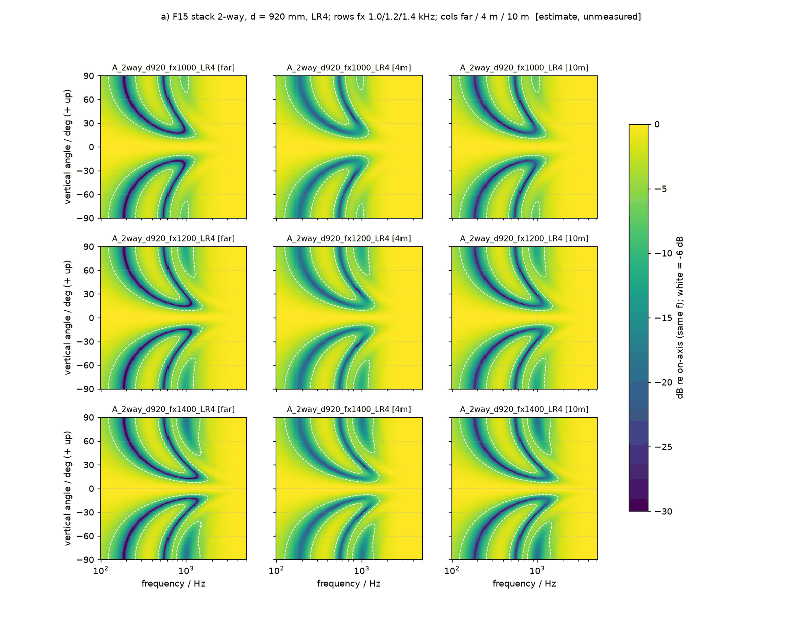
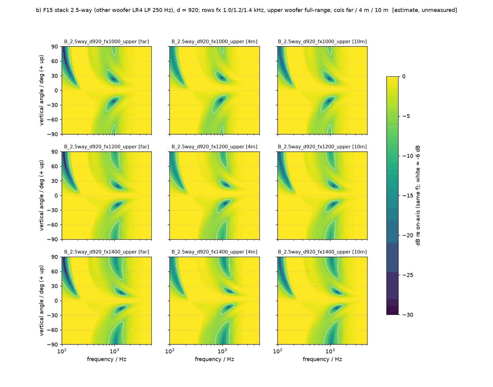
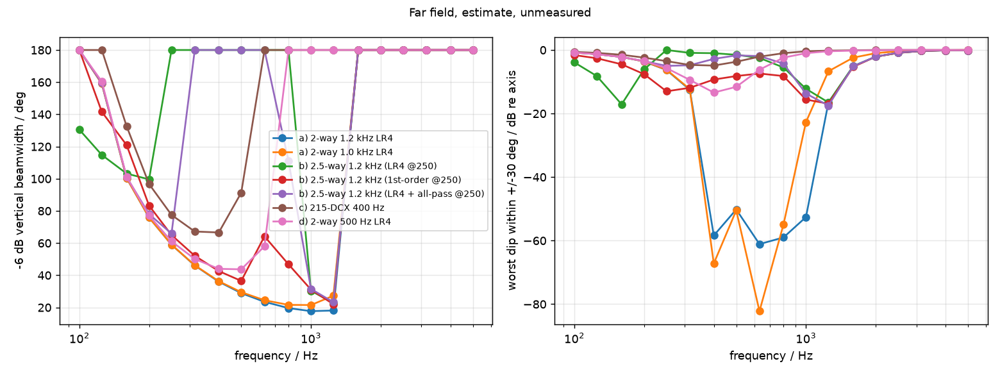
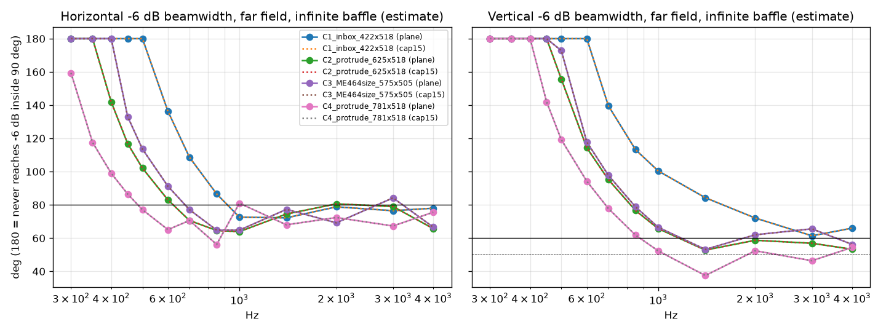

Two Martin Audio Blackline F15 cabinets stacked, one inverted, turned into a 2×15" mid-top in the spirit of the B&C 215-DCX, with a new 3D-printed horn for the compression driver between the two 15" woofers.
The idea is to reuse existing F15 cabinets rather than build new ones: stack two, invert the top one so the woofers sit at the outer ends, and fit a printed horn at the joint. The cabinets should stay restorable where possible; cutting is allowed only if shown to be worth it.
Two calculations have settled the layout. Running both 15" woofers up to a 1.0–1.4 kHz crossover leaves deep holes in the vertical pattern, because the woofers are 920 mm apart (about three wavelengths at 1 kHz). The chosen layout is a 2.5-way: the lower woofer runs full range, the upper woofer is rolled off at 250 Hz, and the original high-frequency driver (thought to be a B&C DE82) takes over at 1.0 kHz on a new flush printed horn about 312 mm wide that fits between the existing ports. No purchase is needed for this route.
What's next: an inspection session on one cabinet (identify the model variant and both drivers, measure the cut-outs and driver dimensions, take impedance sweeps). That session blocks further design. Then the horn is designed, and a second measurement session on the built stack sets the crossover.
| Use | Mid-top over subwoofers |
|---|---|
| Type | 2.5-way: 2 × 15" plus compression driver on a printed horn |
| Coverage | 80° horizontal (Tek, 15 Nov 2026). Vertical is set by the layout: about 29° at 1 kHz for the 2.5-way estimate |
| Bandwidth | Open. A single F15 is rated 55 Hz–18 kHz ±3 dB (Martin Audio F15 datasheet, w4) |
| Maximum SPL at 1 m | Open |
| Drivers | Two of the original Martin DLS623 15" woofers; the original Martin high-frequency driver (DCD082, probably a B&C DE82). Identity not yet confirmed |
| Crossover | Upper 15": LR4 low-pass at 250 Hz, with a matched LR4 all-pass on the lower 15". Woofer to HF: LR4 at 1.0 kHz, the DE82's lowest recommended crossover (B&C DE82 datasheet, w4). Starting settings only |
| Drive | Bi-amped with DSP (provisional, to confirm once driver data are in) |
| Size | Two stacked F15: 471 × 1380 × 443 mm (W × H × D) derived |
| Weight | About 65 kg for the pair derived |
| Manufacture | Existing cabinets, simple woodwork only, kept restorable where possible; 3D-printed horn |
| Mounting | Ground stack or pole only. Martin forbids suspending one Blackline enclosure from another (Blackline user guide, w4) |
| Measurement class | Critical: the build will be measured |
| 14 Nov 2026 | Reuse the existing cabinets and the original HF driver first; bi-amp with DSP (provisional). Why: Tek's scoping answers. |
|---|---|
| 14 Nov 2026 | No flying of the bolted pair; ground stack or pole only. Why: the manufacturer forbids it (Blackline user guide, w4). |
| 15 Nov 2026 | Plain two-way (both 15" up to 1.0–1.4 kHz) dropped. Why: with 920 mm between woofers the vertical pattern has holes deeper than 20 dB inside ±15° over 500–1000 Hz, whatever the crossover frequency, filter type or spacer estimate, unmeasured. |
| 15 Nov 2026 | Project classed critical (will be measured); horizontal coverage 80°. Why: Tek's answers. |
| 15 Nov 2026 | A flush horn inside the cabinets cannot hold 80° horizontally down to 400 Hz. That needs a mouth about 785 mm wide protruding about 225 mm. Why: Keele's mouth-size rule (Keele 1975, AES preprint 1038, w4–5) and a coarse BEM agree within 3 % estimate, unmeasured. |
| 15 Nov 2026 | Layout chosen: 2.5-way with the original HF driver at 1.0 kHz on a flush printed horn about 312 mm wide, fitted between the ports. The 400 Hz crossover with a new coaxial driver is dropped. Why: an 80° mouth for 1 kHz is about 312 mm wide derived, Keele's rule, which fits between the ports (331.5 mm) and keeps the cabinets restorable. Tek's choice. |
Model: woofers as rigid pistons in an infinite baffle, 920 mm centre to centre; HF as a point source at the joint; flat drivers, ideal filters, delay-aligned. No cone break-up, cabinet edges, floor or room. Formulas from Olson and Kinsler (textbooks, not yet in the lab's library).
| Layout | Vertical −6 dB beamwidth at the crossover | Worst dip inside ±30°, 400–800 Hz |
|---|---|---|
| Plain two-way, 1.2 kHz LR4 | 17.8° | deeper than −30 dB (complete cancellation) |
| 2.5-way, 1.0 kHz, LR4 + all-pass (chosen) | 29.3° | −2 to −8 dB |
| 2.5-way, 1.2 kHz, LR4 + all-pass | 24.0° | −2 to −6 dB |
| Both 15" to a 400 Hz crossover | 55.5° | −1 to −7 dB |
| B&C 215-DCX reference, 400 Hz | 66.6° | −1 to −5 dB |



Keele's mouth-size rule, then a coarse boundary-element model of four idealised horns radiating into an infinite baffle at the mouth, 300 Hz to 4 kHz. Solver checks re-run: 7 of 7 exact tests pass, power balance within 1.7 %, mesh refinement changes beamwidths by under 0.1°, and the result is insensitive to the assumed driver wavefront below 4 kHz.
| Candidate | Mouth (W × H) | Horizontal ≤ 90° above |
|---|---|---|
| Flush, inside the boxes (ports removed) | 422 × 518 mm | 825 Hz |
| Protruding 120 mm | 625 × 518 mm | 561 Hz |
| ME464-size reference (does not fit) | 575 × 505 mm | 608 Hz |
| Protruding 225 mm | 785 × 518 mm | 435 Hz |

No print settings yet. The planned part is the flush HF horn, about 312 mm wide, to fit between the ports; it has not been designed. Printer, material and brand, nozzle, layer height, walls, top/bottom layers, infill % and pattern, supports, orientation, splits and joints, nozzle/bed temperatures, speed or profile, brim, slicer and profile version, estimated time and mass: all not set.